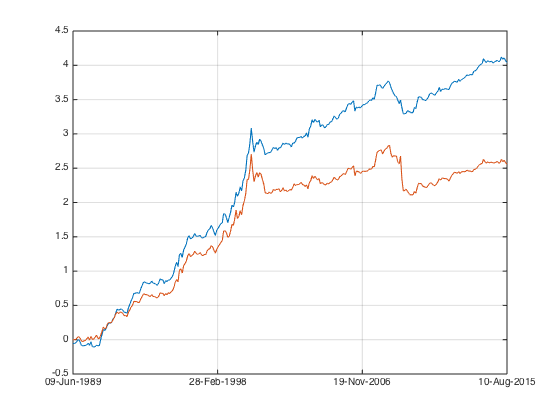

Mom Practical 1
This is the last of Simple Momentum Factor series. It will deal the practical issues.
Contents
Cap weight. Being right for the wrong reason.
S&P futures is still the most low cost way to maintain market neutral. However it is terribly biased towards the large cap. In fact the top 10 securities probably accounted for 50% of the portfolio weight. By using S&P futures, I'm exposed to the large-small cap factor inadvertently.
My current portfolio weight function fun_portfolio_weight does not take in market cap data necessary to calculate a cap weighted short MOM, let's write a separate function to address that.
load('data_equity_list_us.mat'); load('data_field_list.mat'); load('data_historical_data_us.mat'); index = datasample(1:1300,1000,'Replace',false); px = fun_load_price(history_us, equity_list_us, index); cap_ts = fun_load_cap(history_us, equity_list_us, index); px = fun_clean_data(px);
trim the data, for there was no cap data at the first couple of year.
px = px(50:end); cap_ts = cap_ts(50:end);
let's compare cap weight short with equal weight short.
mom_ts = fun_calculate_mom(px); portfolio_weight_cap_weight_short_ts = fun_portfolio_weight_with_cap(mom_ts,cap_ts,'topmshortcap',0.1); portfolio_weight_eq_weight_short_ts = fun_portfolio_weight(mom_ts,'topm',0.1); portfolio_rt_cap_ts = fun_portfolio_return(px, portfolio_weight_cap_weight_short_ts); portfolio_rt_eq_ts = fun_portfolio_return(px, portfolio_weight_eq_weight_short_ts); plot(cumsum(portfolio_rt_cap_ts)); legend('off'); hold on; plot(cumsum(portfolio_rt_eq_ts)); legend('off'); snapnow;
since equal weight outperformed cap weight, I get better result by short the equal weight index instead. Being right for the wrong reason.
another consideration is?since equal weight index is more volatile than cap weight index, by shorting the cap weight index, we inadvertently introduced a market component into our MOM factor portfolio.
portfolio_weight_ts = fun_portfolio_weight(mom_ts,'equalweight');
portfolio_rt_ts = fun_portfolio_return(px, portfolio_weight_ts);
corrcoef(portfolio_rt_cap_ts,portfolio_rt_ts)
corrcoef(portfolio_rt_eq_ts,portfolio_rt_ts)
ans =
1.0000 0.2228
0.2228 1.0000
ans =
1.0000 -0.1183
-0.1183 1.0000
we have much higher correlation with equal weighted market index by shorting cap weighted index instead.
In fact, in long term, the problem with risk (i.e. volatility of cap weight index) is smaller than that of the equal weight index) is more important than the problem of exposing to small-large cap factor.
When doing evaluation and deciding the proper risk allocation to various factors, it make more sense to use equal weight short, since this is much close to being market neutral and reflect the true signal of that factor. Once I have a good assessment of each factors and it characteristics, I will combine them togather, and them deal with the hedging problem all togather at once. With this in mind, let's move on.